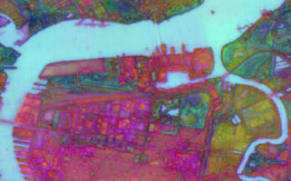

How we build
Technical delivery from paper to production.
We convert recent EO research into deployable systems through structured engineering: method selection, controlled experimentation, pipeline hardening, and technical handover.
 Infrastructure and Utilities
Infrastructure and Utilities
 Agriculture and Forestry
Agriculture and Forestry

Climate and LandEngineering approach
Every project follows a reproducible path: choose the right published methods, adapt them to your constraints, and ship an operational stack your team can maintain.
Core Technical Capabilities
We work across optical and SAR workflows, combining modern model architectures with disciplined data and deployment engineering.
1
Multi-sensor data engineering
Standardize optical, SAR, and contextual layers into training-ready tensors and geospatial features.
2
Model adaptation and fine-tuning
Adapt foundation and task-specific models for segmentation, detection, super-resolution, and change analysis.
3
Evaluation and deployment tooling
Implement benchmark suites, error analysis, CI checks, and deployment endpoints for reliable model updates.
Reproducible builds
Versioned datasets, configs, and model artifacts
Benchmark-driven
Promotion gates based on agreed error and latency targets
Production interfaces
APIs, batch jobs, and monitoring hooks ready for your stack
Discuss your EO AI architecture
Bring your current stack and use case. We will propose a scoped delivery plan with milestones and a clear handover model.
Contact us